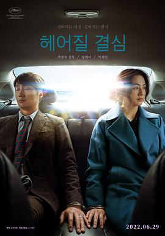

分手的决心 / 헤어질 결심
又名：报复式分手 / Decision to Leave
经典的相似物转场，但最喜欢人物直接在场式的转场。好些镜头真漂亮，比如同一焦平面的虚化，或者被双闪罩着的纱网下的刑警。汤唯真好看呀，尤其这里喜欢碎碎念时危险又迷人，只是中文重音错误多多，好不习惯的。影视剧里总是男人救女人，也许宋女士也一直在等谁来救救她吧。从开始两人的纠缠就是在相互暴露，不敢往前一步不敢戳破窗户纸的拉扯对峙博弈，唇膏这样的暧昧我看得好喜欢。海的意象多次出现，墙纸、话语、日记本封面和最后的消逝之地，好凄凉。
作品信息
| 导演 | 朴赞郁 |
| 编剧 | 郑瑞景 / 朴赞郁 |
| 主演 | 汤唯 / 朴海日 / 李贞贤 / 朴勇宇 / 高庚杓 / 金信英 / 郑永琡 / 柳承穆 / 朴正民 / 徐现宇 / 郑伊书 / 李学周 / 郑素利 / 黄载沅 / 刘台午 / 崔大勋 / 高旻示 / 丁夏潭 / 陈勇旭 / 朱仁英 |
| 类型 | 剧情 / 悬疑 / 犯罪 |
| 制片国家/地区 | 韩国 |
| 语言 | 韩语 / 汉语普通话 |
| 上映日期 | 2022-05-23(戛纳电影节) / 2022-06-29(韩国) |
| 片长 | 138分钟 |
| IMDb | tt12477480 |
说过什么
2026-06-04 12:13:34
广播 · 看过 · ★★★★☆
经典的相似物转场，但最喜欢人物直接在场式的转场。好些镜头真漂亮，比如同一焦平面的虚化，或者被双闪罩着的纱网下的刑警。汤唯真好看呀，尤其这里喜欢碎碎念时危险又迷人，只是中文重音错误多多，好不习惯的。影视剧里总是男人救女人，也许宋女士也一直在等谁来救救她吧。从开始两人的纠缠就是在相互暴露，不敢往前一步不敢戳破窗户纸的拉扯对峙博弈，唇膏这样的暧昧我看得好喜欢。海的意象多次出现，墙纸、话语、日记本封面和最后的消逝之地，好凄凉。
最后一次看到是 2026-10-07T23:12:45+08:00 · 豆瓣原页